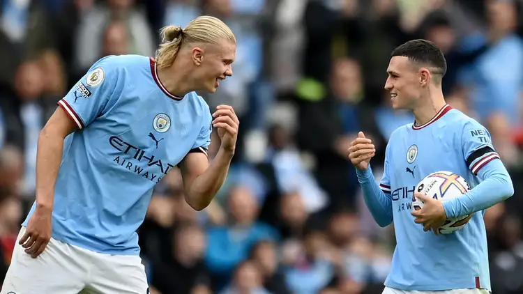
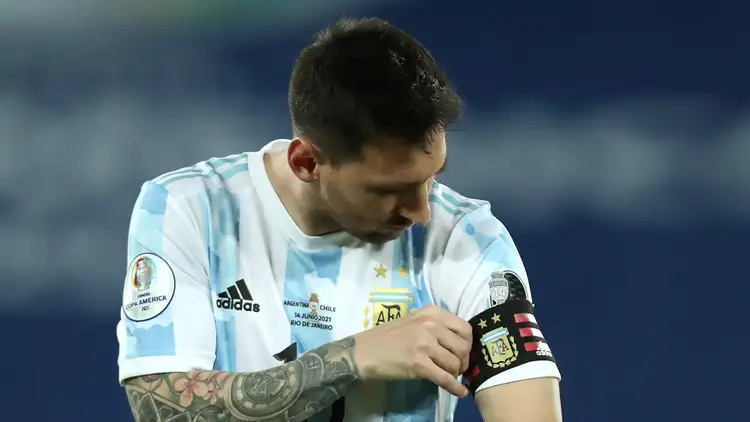
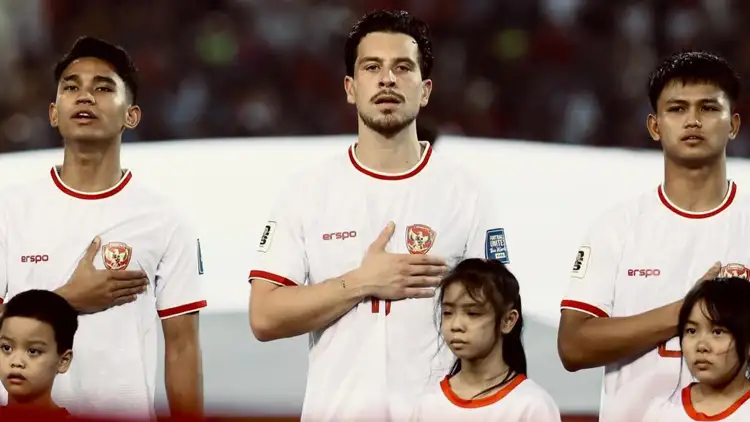
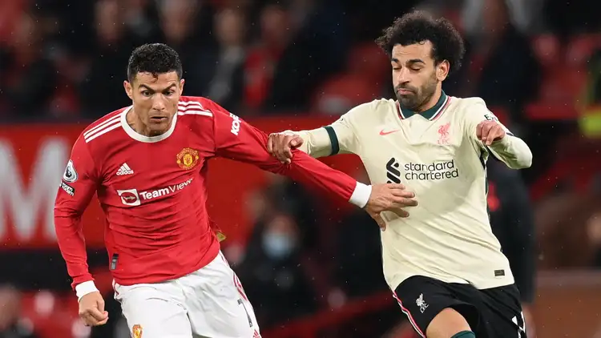
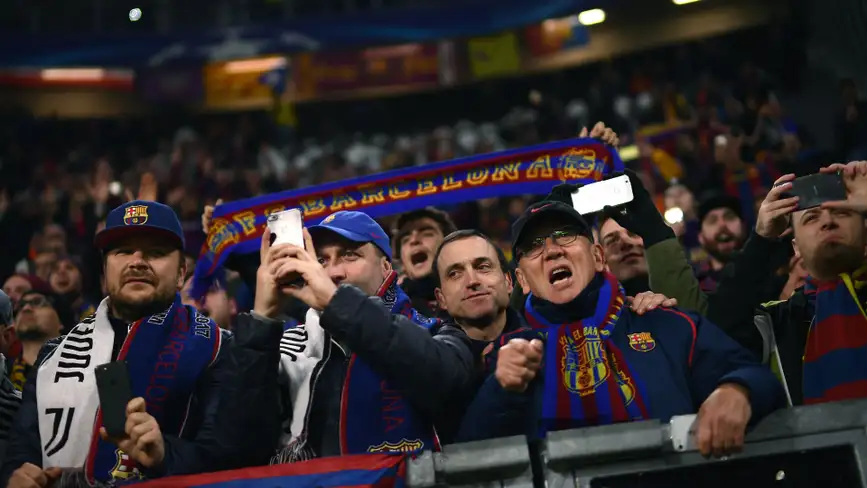

Seputar Fakta Menarik Sepak Bola
Website oleh: Farhan dan Sakti

Pemain yang mencetak hat-trick biasanya akan membawa pulang bola di akhir laga. Tapi dari mana tradisi itu?
Seperti diketahui, mencetak gol di level profesional bukanlah perkara mudah, apalagi tiga sekaligus di satu pertandingan.
Untuk itu, pesepakbola biasanya akan mencari cendera mata untuk dibawa pulang dan yang paling gampang adalah bola, sebagaimana mereka menjadikan itu ‘oleh-oleh’ dari laga di mana ia menjadi bintang.
Bola hat-trick itu biasanya akan ditandatangani oleh rekan satu tim dan nantinya bisa mereka jadikan kenang-kenangan ketika mengenang kembali kariernya.

Kebanyakan kapten memilih lengan kirinya untuk dipasangi ban tersebut, tapi mengapa demikian?
Mengutip dari Football Handbook, kebanyakan kapten memakai ban lengan di sisi sebelah kiri karena sebagian besar dari mereka lebih dominan dengan tangan kanan.
Dengan demikian, lebih mudah bagi mereka untuk memasang ban kapten itu di lengan kiri. Tetapi sebenarnya boleh saja mengenakan ban kapten di lengan kanan. Di masa lalu, Alessandro Del Piero kerap memakai ban kaptennya di lengan kanan ketika memperkuat Juventus serta tim nasional Italia.

Jersey tim nasional cuma diperbolehkan menempelkan logo federasi atau bendera suatu negara. Paling mentok sponsor yang bisa terpampang adalah penyedia apparel saja.
Sejatinya, federasi sejumlah negara macam Inggris, Italia, hingga Indonesia, menjalin kerja sama dengan sponsor. Akan tetapi, merek perusahannya cuma bisa ditaruh pada jersey latihan saja maupun papan iklan di pinggir lapangan.
Sementara buat jersey pertandingan, logo sponsor tidak boleh terpampang. Penyebabnya, FIFA melarangnya karena untuk menjaga integritas kompetisi.

Segelintir klub boleh berbangga karena tak pernah turun kasta dari Liga Primer, tetapi siapa saja mereka?
Sejak terbentuknya Liga Primer sebagai kompetisi penerus Divisi Utama Inggris pada 1992, ada segelintir klub yang dapat mengklaim diri tidak pernah terdegradasi.
Mereka adalah: Manchester United, Arsenal, Tottenham Hotspur, Liverpool, Everton dan Chelsea. Keenam klub itu telah menjadi kontestan di divisi teratas selama beberapa dekade.

Istilah Decul populer dilontarkan kepada fans Barcelona di Indonesia, dan kebanyakan dari itu datang dari kelompok suporter lawan, tapi apa arti sebenarnya di balik itu?
Bermula dari julukan Barcelona yakni Los Cules , warganet di Indonesia lantas mengaitkan suporter klub tersebut dengan sebutan Decul , yang merupakan singkatan dari “Dedek-Dedek Cules”, meski konotasinya terdengar negatif.
Hal itu disematkan kepada pendukung atau fans Barcelona yang dianggap masih bertingkah seperti anak-anak mengingat mereka adalah pihak yang dituding kerap terlibat ’perdebatan’ di dunia maya dengan kelompok suporter lain, terutama Real Madrid.
Sebagai balasan, tak jarang Decul kerap membalas barisan suporter Madrid dengan sebutan “Dedemit”, yang diketahui menjadi kependekan dari “Dedek-Dedek Madrid”. Adapun dalam bahasa Jawa sendiri, Dedemit merupakan arti lain dari Setan.